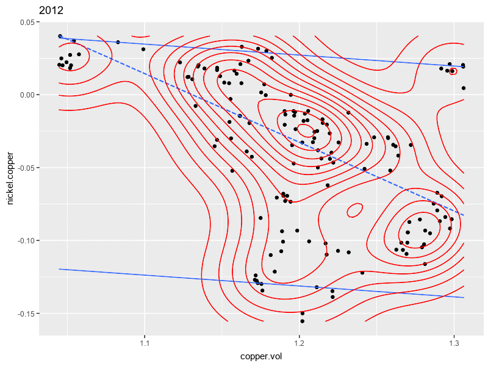

Source: LME historical non-ferrous metals prices percentage returns 90-day rolling correlation (vertical axis) and 90-day rolling volatility (horizontal axis).
View an example of a financial web application built with the tools developed here.
Financial models: extreme value, market spillover, market risk measurement, portfolio analytics
R: flexdashboard and shiny for application development; kable, ggplot2 and plotly for visualization, and many other packages to support statistical, optimization, graphics, and financial modeling needs.
Here are the scripts, data, images, and animation you need to build this application:
ImageMagick animation installation and be sure to install the magick r package and you might also view this useful ropensci magick tutorial.
Financial analytics combines statistics, probability, operations research, data science, and computational technologies to analyze various types of financial data sets, and to make meaningful decisions based on analyses obtained from the data.
The topics here covers various areas in the financial industry, from analyzing transactional data (credit card receivables) to studying global relations between macroeconomic events to managing risk and return in multi-asset portfolios, and the calculation of risk-based capital.
Analyses deploy a wide range of techniques including quantile estimation, portfolio analytics, risk measurement, extreme value analysis, forecasting and predictive techniques, and financial modeling.
Science alone of all the subjects contains within itself the lesson of the danger of belief in the infallibility of the greatest teachers of the preceding generation. - Richard Feynman
By its very nature the science of data analytics is disruptive. That means, among many other things, that much attention should be paid to the scale, range, invalid, at yet not understand, outlying, and emerging trends. This is as true within the finance domain of knowledge as any other.
Financial analytics combines software development to implement financial analyses (functions, objects, data structures, flow control, input and output, debugging, logical design and abstraction) through writing code. Analysts can then set up stochastic simulations, manage data analyses, employ numerical optimization algorithms, diagnose their limitations, and work with and filter large data sets. Since programming code is also an important form of communication among analysts, a key feature of financial analytics is to learn how to comment and organize code, as well as document work product.
R and RStudioAll of the financial topics use the R programming language with the RStudio integrated development environment.
The official introduction to R from the CRAN website, An Introduction to R, is available here.
Here is the R Studio website.
Each year the R in Finance conference brings practitioners from industry and academia together to share the latest developments in financial analytics all using the R platform.
Copyright © 2018 William G. Foote. All rights reserved.